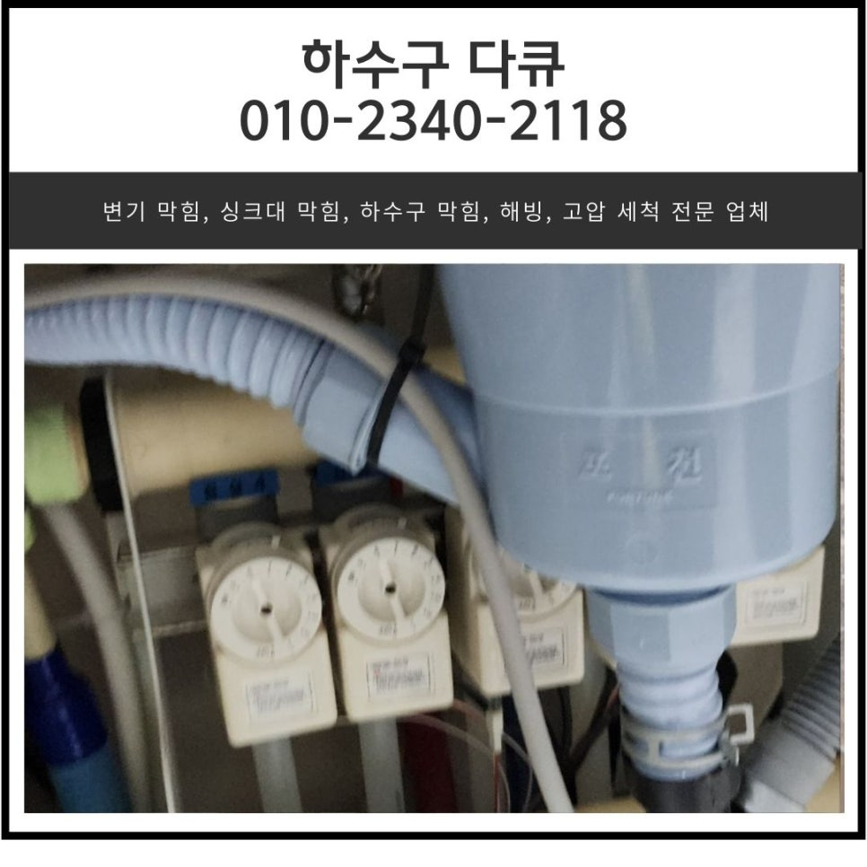
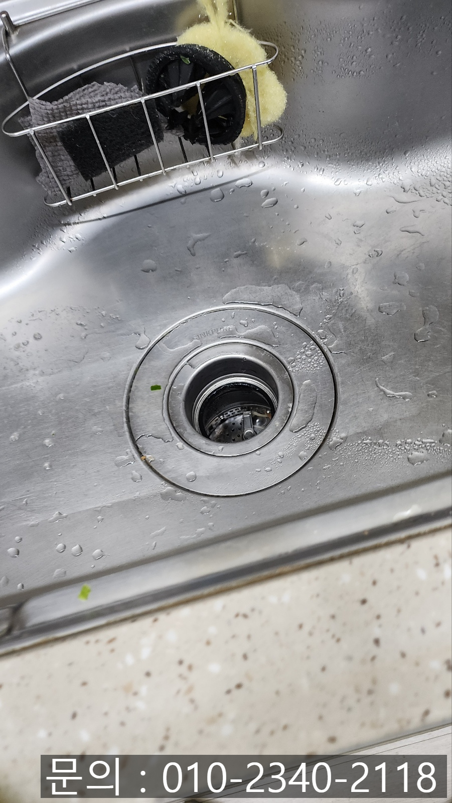
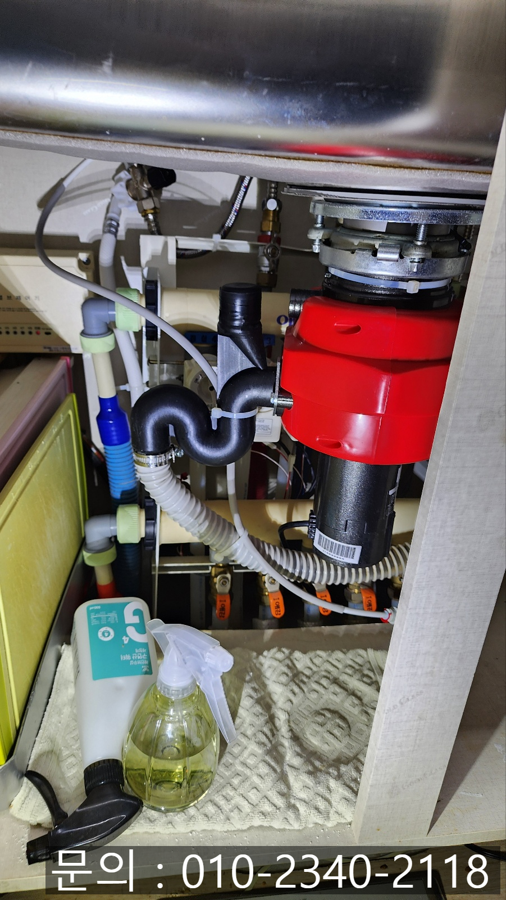
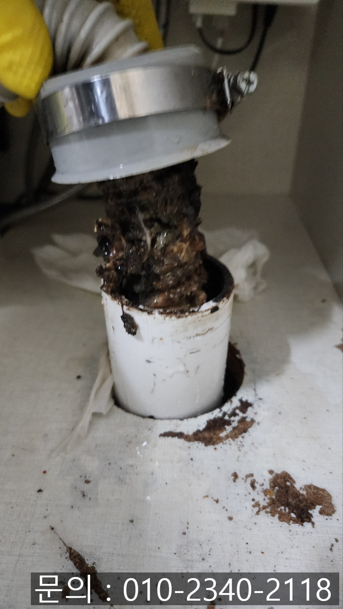
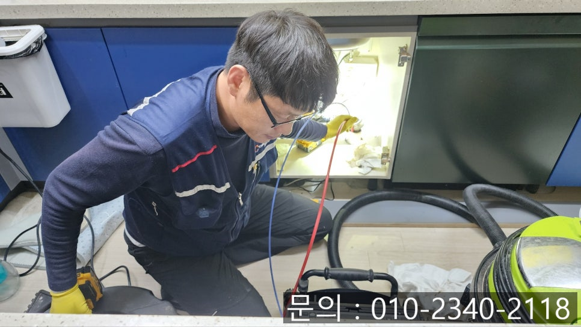
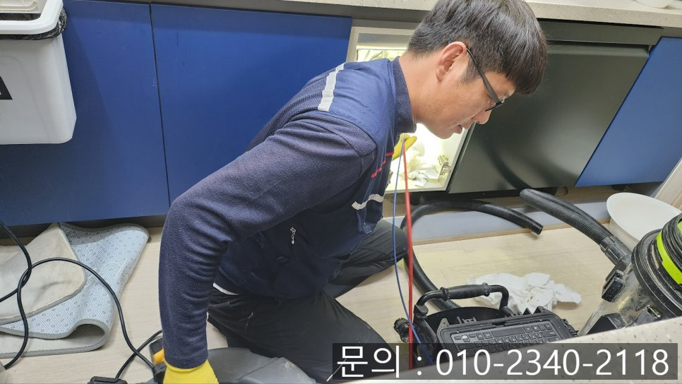
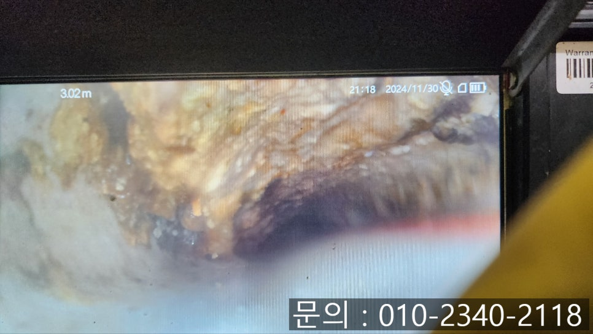

🏠 기산동 싱크대 막힘 화성 산척동 음식물 처리기 씽크대 역류 해결
화성 산척동 싱크대막힘 전문 시공 후기

📋 작업 개요
- 위치: 화성 산척동, 산척동, 화성
- 서비스 유형: 싱크대막힘, 하수구막힘, 배관막힘, 역류해결, 뚫는업체
- 작업 일시: 2024. 12. 10. 11:27
- 업체명: 하수구수사대 (010-5615-2118)
🔍 문제 상황
안녕하세요.
기산동 싱크대 막힘, 화성 산척동 음식물 처리기 씽크대 역류 해결 업체 하수구 다큐입니다.
바쁜 현대 사회에서 음식물 처리기는 없어서는 안 될 주방 기기로 자리 잡고 있는데요.
가족의 식사를 조리하기 위해 식재료를 다듬고, 음식을 만들면서 발생하게 되는 음식물 쓰레기의 경우 빠르게 썩으면서 악취가 발생하고 벌레도 생기기 마련입니다.
싱크대에 설치해서 사용하는 음식물 처리기는 싱크대에서 바로 분쇄하고 하수구로 배출해 주다 보니 이런 불편함을 해소해 줍니다.
그뿐만 아니라 아파트나 빌라 같은 공동 주택의 경우 음식물 쓰레기를 배출하는 장소가 정해져있는데요.
음식물 쓰레기를 버리는 장소로 나가야 하는 번거로움을 없앨 수 있다 보니 점점 많은 가정에서 설치하고 있는 추세입니다.
오늘 소개해 드릴 기산동 싱크대 막힘 현장 역시 음식물 처리기를 사용하고 계신 가정이었어요.

🔎 원인 분석
💡 전문가 진단: 정밀 진단 장비를 사용하여 슬러지의 고착 여부를 판명하고 타격/세척 작업을 실시했습니다.
주말에 손님들이 방문하셔서 많은 양의 음식물 쓰레기를 처리하는 과정에서 역류가 발생해 아파트 관리사무소에서 하수구 다큐를 소개받아 연락 주셨습니다.
기산동 싱크대 막힘으로 인해 발생하는 불편함을 최소화하기 위해 고객님께 주소를 전달받아 신속하게 방문해 드렸어요.
화성 산척동 음식물 처리기 씽크대 역류 해결 업체 하수구 다큐는 문제를 해결하기 위해 필요한 장비들을 챙겨 주방으로 들어가 싱크대를 확인해 보니 음식물 처리기를 어렵지 않게 확인할 수 있었습니다.
아무래도 잘게 갈리지 않은 상태로 배수구로 흘러들어가 막혔을 가능성이 높아 보였지만 정확한 원인을 파악하기 위해 주름 배관을 분리한 뒤 배관 내부를 점검해 보기로 했습니다.
싱크대와 하수구를 연결해 주는 주름 배관을 분리하자 배관을 타고 흘러들어가 물과 함께 썩어버린 기름 슬러지와 음식물 찌꺼기를 확인할 수 있었습니다.
더불어 악취도 진동해 코를 찌르는 상태로 빠른 해결이 필요해 보였어요.
배관 내시경 카메라를 이용해 배관의 내부 상태를 점검해 보기로 했습니다.
예상했던 대로 잘게 갈리지 않은 음식물 쓰레기와 기름 슬러지가 뒤엉켜 통수가 전혀 진행되지 않고 있는 상태였습니다.
고객님께 배관 내부의 상태를 내시경 카메라를 이용해 확인한 다음 작업 방향에 대해 설명해 드렸어요.

🔧 작업 과정
워낙 배관 내부에 이물질이 많다 보니 플렉스 샤프트 장비와 석션을 이용해서 모두 제거해 드리기로 했습니다.
플렉스 샤프트 장비의 경우 좁은 배관에 진입해 이물질을 제거하는 작업을 하게 되는데요.
노즐 끝에 달려있는 체인이 배관 내부에서 360도로 회전하면서 이물질을 타격해 잘게 부숴주는 작업을 하게 됩니다.
배관 내벽에서 떨어진 이물질은 배관이 다시 막히지 않도록 석션 장비를 이용해 빨아드려 완벽하게 제거하는 작업을 진행해요.
몇 차례 플렉스 샤프트와 석션 장비를 이용해 이물질을 제거하자 통수가 진행되고 배관의 모습도 조금씩 드러내기 시작합니다.
완벽을 추구하는 하수구 다큐는 잔여 이물질을 제거하는 작업을 계속해서 진행했어요.
앞서 말씀드린 방법을 수차례 반복해서 진행하자 쌓여있던 이물질일 제거되고 점차 배관이 제 모습을 찾기 시작했어요.
위에서 봤던 배관 내부의 모습보다 이물질이 많이 제거된 게 확인되시죠?
거의 다 제거되었지만 아직도 소량의 이물질이 남아있어 화성 산척동 씽크대 역류 뚫어주는 업체 하수구 다큐는 내시경 카메라로 꼼꼼하게 확인해가며 끝까지 제거하는 작업을 진행했어요.
몇 번을 더 반복해서 작업을 진행하고 배관에서 제거된 기름 슬러지입니다.
좁은 배관에 이렇게 많은 이물질이 쌓여있었다니 정말 놀라웠습니다.
잔여 이물질 없이 새것처럼 깨끗해진 배관이 보이시죠?
이물질을 모두 제거했지만 다시 한번 내시경으로 점검해 드렸습니다.
마지막으로 음식물 처리기를 설치한 뒤 싱크대 막힘이 자주 발생한다는 고객님께서 음식물 처리기를 제거해달라고 요청하셔서 새 배수통으로 교체까지 깔끔하게 진행해 드린 다음 작업을 마무리할 수 있었어요.


✅ 작업 완료
싱크대 막힘은 언제나 발생할수 있는 설비 문제입니다.
지금 하수구 막힘으로 고민하고 계신다면 연락주세요.
완벽하게 해결해드리겠습니다.
경기도 화성시 효행로 1060 10층 1004-A246호




⚠️ 주방 싱크대 배관 막힘 예방 수칙
- ✅ 기름기가 묻은 식기나 프라이팬은 설거지 전 키친타올로 반드시 기름때를 닦아내세요.
- ✅ 주기적으로 싱크대 개수대에 뜨거운 물을 가득 받아 한 번에 내려 배관 내부 기름을 씻어내세요.
- ✅ 배수구 거름망을 미세한 필터로 사용하시고 음식물 찌꺼기가 틈으로 새어 들지 않게 관리하세요.
- ✅ 베이킹소다와 식초를 뜨거운 물과 함께 일주일에 한 번씩 부어주면 배관 살균과 막힘 예방에 좋습니다.
💡 핵심 정리
- 확실한 장비 작업(내시경 점검 및 샤프트 스케일링)으로 원인을 뿌리 뽑습니다.
- 작업 후 1년 이내에 동일한 부위 재발 시 100% 무상 A/S 서비스를 보장합니다.
- 서울 · 경기 · 인천 전 지역에 24시간 언제든 긴급 출동할 수 있도록 항시 대기 중입니다.
❓ 자주 묻는 질문 (FAQ)
🚨 화성 산척동 싱크대막힘 문제로 고민이신가요?
정확한 원인 진단과 확실한 시공으로 재발 없는 해결을 약속드립니다.
24시간 긴급 출동 | 서울 · 경기 · 인천 전지역 | 1년 내 재발 시 무상 A/S